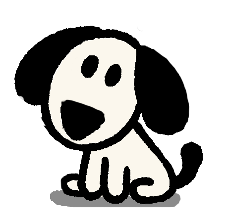
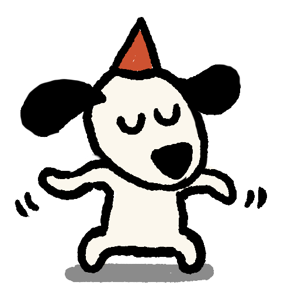
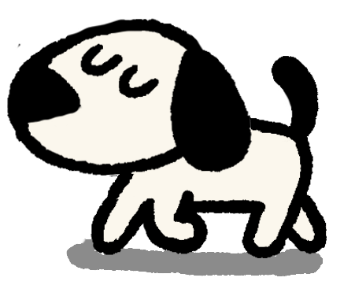
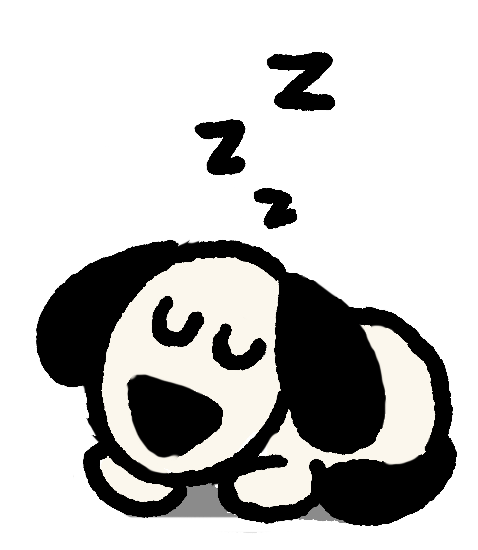

Product & Design Bible · v1 · visual companion

The hard part isn't laziness. It's getting started. Deciding to walk while you're on the couch feels like a lot. Deciding once you're already outside feels like nothing. So the app never asks you to go for a walk. It just tells you the mailbox has something in it: one minute away, always worth the trip. Anything longer, you decide once you're already out there.
what it's really about
The small things. A good stick. The smell before rain. Four minutes outside on a gray day. Little moments, felt bigger than they have any right to be... and nothing has to happen for a day to be worth something.

These screens are a rough idea of different screens. Navigation and other details are not defined here but the aesthetic should feel like this. Clean, minimal and calming with subtle analogue sounds.
The app doesn't talk to you in plain app text. A narrator does: a dry, specific voice that tells you what Mosey is up to, the way you'd narrate your own dog. It has a point of view, not just information. It types on a typewriter, live, and a typewriter can't delete. It can only keep going, or cross a word out. So it does both: it adds an afterthought (a pause, then a truer second thought), or strikes a word out and leaves it there, crossed out, not rewritten. It also reacts to what you do: pet Mosey, and it will have an opinion. Mosey is always “Mosey,” never “he” or “it.”
The rules the app doesn't break.

Most apps put their features in menus and dashboards. Mosey turns each one into a character instead. Notifications became a flag on a mailbox. Goals became places you walk to. The usual "keep your streak" became a tortoise on a slow journey you're helping along. None of them have names. Only Mosey does.
What keeps the app fresh is the world, not just the dog. Five simple systems each add something new on their own: the weather, the seasons, the mail. Most days there's a reason to come back, without one person hand-making content forever.

Fitness apps lose people fast; companion apps keep them. Mosey is built to be the second kind. Everything you need is free forever: the walks, the mail, the whole loop. You only pay for extras: outfits for Mosey, ways to decorate. The walk itself is never for sale. The numbers below are targets to test in the beta, not promises.